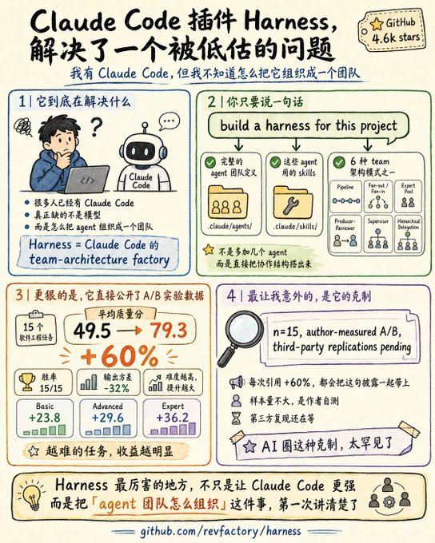
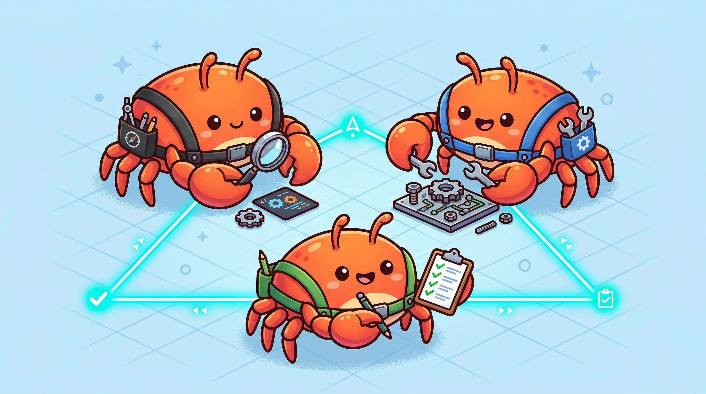
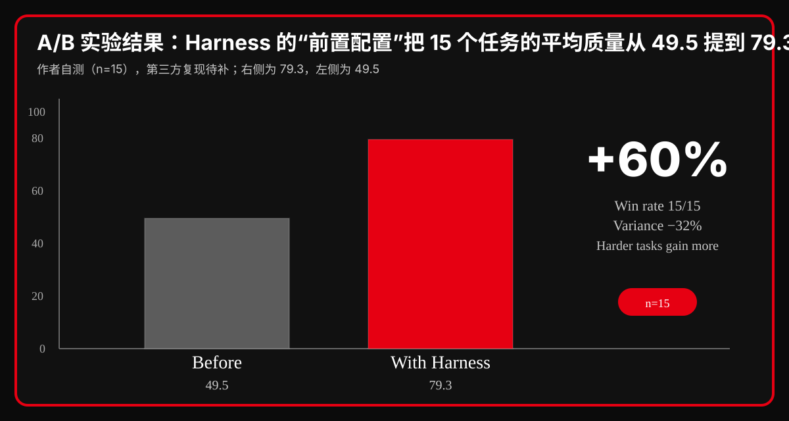

X / GitHub / Claude Code
高密度信息卡
原帖 + 仓库 + 实验
Harness 不是 prompts 清单，而是 Claude Code 的团队架构工厂
X 帖 + GitHub repo 双证据：revfactory/harness 把 Claude Code 变成可组织、可验证、可迭代的团队系统。 这条 X 帖直接把问题说穿：我有 Claude Code，但我不知道怎么把它组织成一个团队。 Harness 给的不是单次 prompt，而是 agent 团队定义、skills、协作模式和验证流程。
发帖时间2026-06-01 09:55
公开互动8 replies / 68 reposts / 267 likes
观看 / 书签312 bookmarks / 16,118 views
GitHub 现况5.3k stars
01 / 原帖主张
what it says
一句话结论
这条帖子的主张不是“又一个 Claude Code 插件”，而是：把 Claude Code 从单点工具升级成可编排的团队系统。它用一个触发语句把团队定义、skills、协作模式和验证链条一起生成出来。
原帖的四个核心点
- 问题：人已经有 Claude Code，但缺的是“怎么把它组织成团队”。
- 触发：
build a harness for this project。 - 产物：
.claude/agents/、.claude/skills/、6 种 team architecture。 - 姿态：作者明确把 +60% 放在 n=15、自测、待复现的边界里。
原帖附图

作者
@GoSailGlobal · GoSailGlobal
原帖要点
“我有 Claude Code，但我不知道怎么把它组织成一个团队。”
证据姿态
n=15 / author-measured / third-party replications pending
02 / 仓库到底是什么
repo anatomy
主仓库：revfactory/harness
- 定位：Claude Code 的 team-architecture factory，不是 prompts 清单。
- 核心输出：
.claude/agents/+.claude/skills/。 - 架构模式：Pipeline / Fan-out-Fan-in / Expert Pool / Producer-Reviewer / Supervisor / Hierarchical Delegation。
- 安装方式：Marketplace 安装，或把
skills/harness复制为全局 Skill。
仓库两张配图


仓库信号
.claude-plugin / skills / README，说明它是插件市场级产物。
使用语义
“build a harness for this project” 触发后自动生成团队。
场景
复杂项目、长期项目、多角色协作项目。
03 / 数据核
evidence
A/B 实验的硬数字
- 样本：15 个软件工程任务。
- 平均质量分：49.5 → 79.3。
- 胜率：15/15。
- 输出方差：-32%。
- 难度效应：Basic +23.8 / Advanced +29.6 / Expert +36.2。
把数字画出来

边界提醒：这组数据是作者自测，不是已经完成第三方复现的学术定论。卡片里可以写“效果显著”，但不能把“待复现”擦掉。
04 / 怎么用、什么时候别用
usage & boundary
适合
- Claude Code 用户，且项目有多角色协作需求。
- 你想把一个领域问题直接翻译成 agent 团队与 skills。
- 你需要把“分工、验证、协作、反馈”写成可复用机制。
不适合 / 风险
- 只是一个简单脚本，不需要团队编排。
- 你要的是 deterministic runtime config，而不是 team architecture。
- 你要跨 runtime / 跨平台统一管理，它不是最上层抽象。
最短上手路径
/plugin marketplace add revfactory/harness/plugin install harness@harness-marketplace- 或复制
skills/harness到全局 Skill - 然后输入：
build a harness for this project
结果应该长什么样
- 不是一个单一 prompt，而是一套 agent 团队骨架。
- 不是只写技能名，而是把技能和架构绑定起来。
- 不是“模型更聪明”，而是“系统更可控”。
05 / 一句话判断
verdict
结论
Harness 的价值不是再造一个 Claude Code，而是把“agent 团队怎么组织”这件事第一次讲成了可复用的工程模板。 对复杂项目它很有用；对简单任务，它就有点重。
当前星标
5.3k stars
原帖时间
2026-06-01 09:55 · @GoSailGlobal
证据仓库
revfactory/claude-code-harness